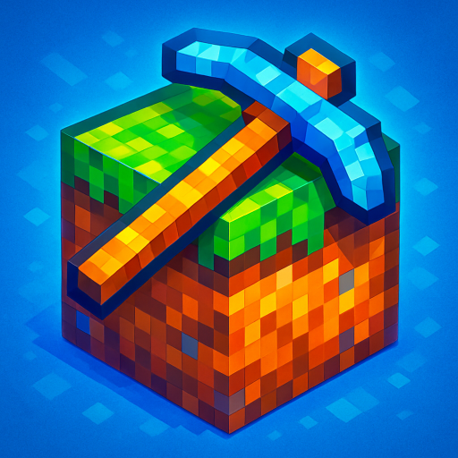

Tap Miner
Tap Miner is a voxel-style idle mining game where you tap to dig, mine resources, and grow your empire. Discover rare minerals, unlock powerful upgrades, and automate your workflow to become the ultimate mining tycoon!
Customize your tools, manage enchanted runes, and explore deep underground biomes in a fun, pixelated world. Whether you're playing actively or passively, Tap Miner rewards you with constant progression.
Available soon on Android and iOS.
Back to Games